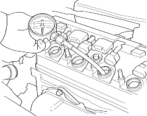

- Warm up the engine to normal operating temperature (cooling fan comes on).
- Turn the ignition switch OFF.
- Remove the air cleaner housing (see step 6 on page 6-29).
- Disconnect all four injector connectors.
- Start the engine and let it run until it stalls.
- Remove the all four ignition coils (see page 4-24).
- Remove the all four spark plugs.
- Attach the compression gauge to the spark plug hole.

- Connect a tachometer.
- Open the throttle fully, then crank the engine with the starter motor and measure the compression.
Compression Pressure:
Above 930 kpa (9.5 kgf/cm2, 135 psi)-250 rpm (min-1)
- Measure the compression on the remaining cylinders.
Maximum variation:
Within 200 kPa (2.0 kgf/cm2, 28 psi)
- If the compression is not within specifications, check the following items, then remeasure the compression.
- Damaged or worn valves and seats
- Damaged cylinder head gasket
- Damaged or worn piston rings
- Damaged or worn piston and cylinder bore